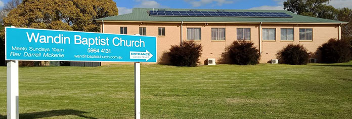
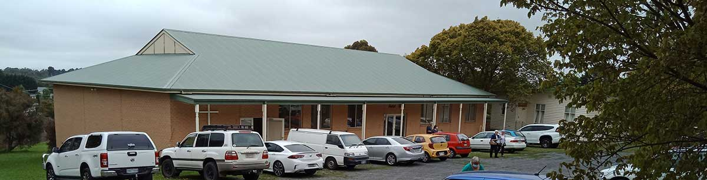
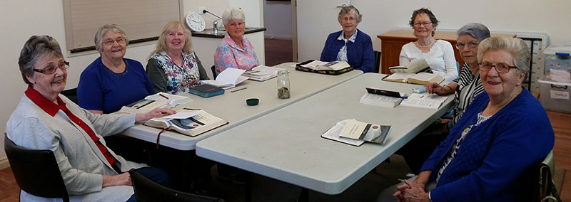

Wandin Baptist Church
Welcome to Wandin Baptist Church’s home on the web — a place to learn, to grow, to serve and get connected with men and women seeking to grow in their relationship with Jesus Christ.
We meet for worship weekly on Sundays at 10am, corner Clegg Road & Warburton Highway, Wandin North


